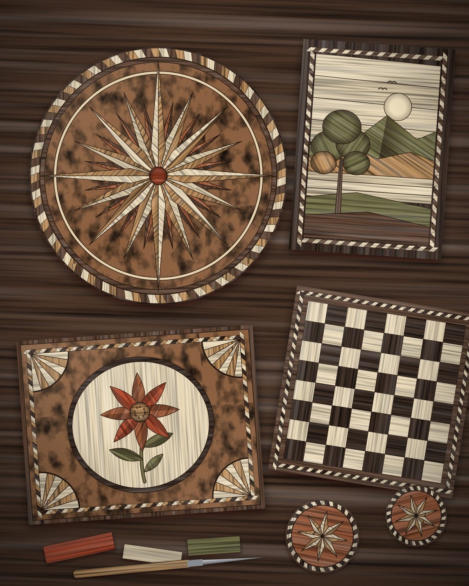
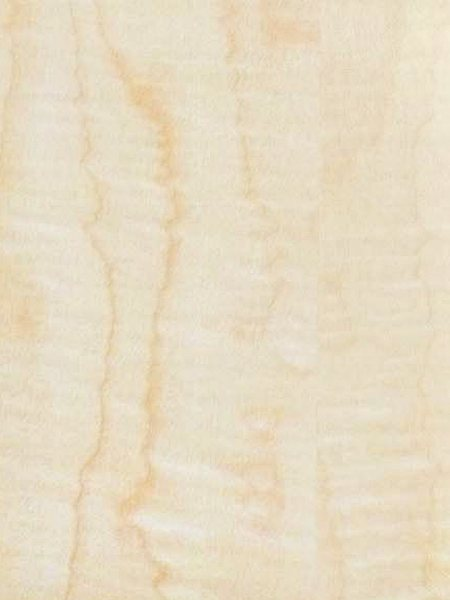
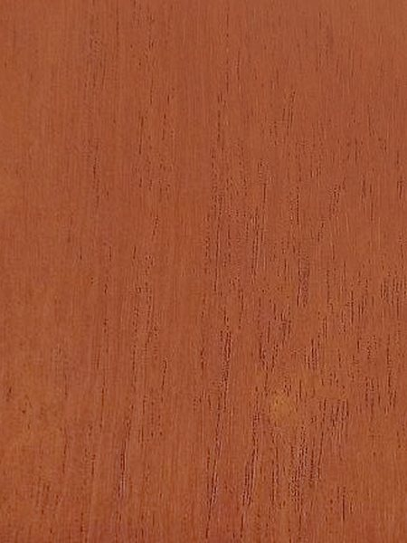
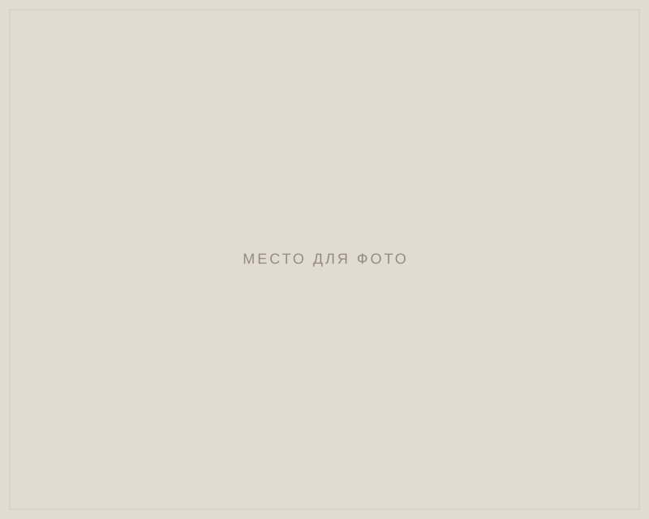
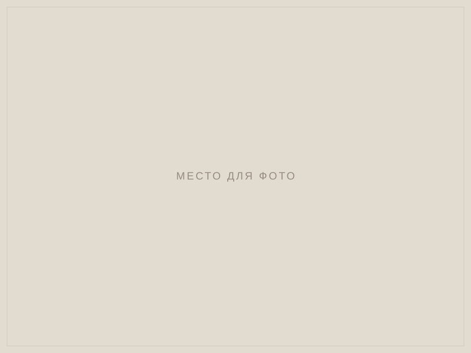

Школа маркетри Татьяны Гориной
Учим собирать картины и орнаменты из натурального шпона: от первого простого набора до панно и вставок в мебель. Занятия проходят в мастерской в Москве.

Что такое маркетри?
Маркетри — техника наборной мозаики из дерева. Изображение собирают из тонких листов шпона разных пород: каждая порода даёт свой цвет и рисунок волокон, а мастер подбирает их, как художник краски.
Расцвет техники пришёлся на Францию XVII–XVIII веков, где ею украшали дворцовую мебель. Сегодня маркетри — редкое ремесло. В нём важны терпение, точность ножа и чувство материала, а не дорогие станки.
Палитра мастера
В маркетри нет красок: цвет даёт сама древесина. Здесь лишь несколько пород для примера, а на курсе вы познакомитесь с десятками других — от редких капов и экзотики до цветного шпона, превращающего дерево в настоящую палитру.

Клён-явор
Acer pseudoplatanus
Почти белый, с шелковистым блеском и волнистым рисунком. Из этого клёна делают скрипки, а в маркетри — фон, небо и блики.
Берёза жёлтая
Betula alleghaniensis
Светлая, с тёплым медовым оттенком и мягким рисунком «арками». Хороша для светлых тёплых деталей.
Дуб
Quercus robur, Quercus petraea
Золотисто-коричневый, с отчётливыми порами и прямыми линиями волокон. Прочный и выразительный.
Черешня
Prunus avium
Тёплая, розовато-оранжевая, с ровным мягким рисунком. На свету со временем темнеет и становится глубже.

Кедр
Cedrus
Насыщенный красновато-коричневый, с ровным прямым волокном. Подходит для тёплых теней и осенних мотивов.
Венге
Millettia laurentii
Тёмно-коричневый, почти чёрный, с контрастными прожилками. Порода из тропической Африки: контуры, тени, графика.
Татьяна Горина
Мастер и преподаватель маркетри.
Я взяла резец в руки в сорок лет. До этого шила, вязала и копала грядки, а потом брат-краснодеревщик показал мне маркетри. Я много работала на заказ, долгие годы — в реставрационных мастерских на Чистых прудах. Сейчас в основном учу. И творчество у нас с учениками совместное: я учусь у них, а они у меня.
Курс маркетри
Один курс из трёх этапов за три месяца: от первого движения ножом до собственного панно. Подходит и тем, кто никогда не работал с деревом.
Основы
Знакомство с инструментами и материалом.
Результат: небольшой орнамент из нескольких пород
Картина из шпона
Работа с цветом, волокном и объёмом.
Результат: панно по готовому эскизу
Собственная работа
Полный цикл, от идеи до готового изделия.
Результат: законченное панно или вставка для мебели по вашей идее
Как рождается работа
На занятиях вы пройдёте все этапы, которые проходит мастер.
Эскиз
Рисунок переводят на кальку и делят на фрагменты.
Подбор шпона
Для каждого фрагмента выбирают породу по цвету и направлению волокон.
Резка
Фрагменты вырезают ножом по линиям эскиза.
Набор
Детали собирают вместе и фиксируют бумажной лентой.
Отделка
Набор приклеивают на основу, шлифуют и покрывают маслом или лаком.
Где живёт маркетри
Вся галереяТехника маркетри подходит для картин, мебели, подарков и целых интерьеров. Работы мастера по рубрикам.


Работы учеников
Все работы учениковЭти панно сделаны на курсе. Каждое — результат одного из трёх этапов.



Журнал
Все статьиМаркетри: история и техника
Откуда пришла наборная мозаика из дерева, как создаётся работа и чем маркетри отличается от интарсии и паркетри.
Как научиться маркетри с нуля
Нужен ли художественный опыт, с каких работ начинать и какие ошибки чаще всего совершают новички.
Породы шпона для маркетри
Светлые, тёмные и цветные породы, капы и как выбрать шпон для своей работы.
Частые вопросы
Нужен ли опыт работы с деревом?
Нет. Первый этап курса рассчитан на тех, кто ни разу не работал со шпоном. Мастер показывает каждый приём и помогает на всех этапах.
Нужно ли покупать инструменты и материалы?
Нет, всё необходимое для занятий есть в мастерской. Если решите заниматься дома, мастер подскажет, какие инструменты купить.
Можно ли пройти только один этап?
Курс построен так, что каждый следующий этап опирается на предыдущий. Если у вас уже есть опыт, мастер подскажет, с какого этапа можно начать.
Сколько длится курс?
Три месяца: занятия два раза в неделю по два часа. Даты ближайшего набора уточняйте у мастера по телефону или в мессенджере.
Можно ли заниматься, если я живу в другом городе?
Да. Для учеников из других городов мастер составляет индивидуальный график.
Можно ли забрать свою работу?
Да, работы, сделанные на занятиях, остаются у вас.
Можно ли подарить обучение?
Да, курс можно подарить. Подробности уточняйте у мастера.
Чем маркетри отличается от интарсии?
В интарсии детали врезают в массив дерева, а в маркетри изображение целиком набирают из тонкого шпона и наклеивают на основу. Сегодня эти слова часто используют как синонимы.
Контакты
Как добратьсяЧтобы записаться на занятие или задать вопрос, позвоните или напишите в мессенджер.
- Телефон
- +7 (900) 000-00-00
- Telegram
- Написать в Telegram
- Написать в WhatsApp
- Почта
- info@example.ru
- Мастерская
- Москва, Брошевский переулок, дом 4